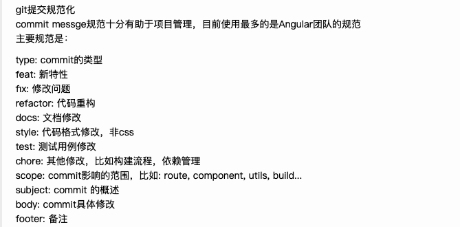
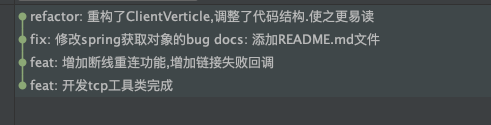

git init 项目名§
ls 显示出内容
git clone 远程仓库地址§
例子：git clone git@gitee.com:willern/vue-demo.git
使用 git clone 拷贝一个 Git 仓库到本地，让自己能够查看该项目，或者进行修改。
如果你需要与他人合作一个项目，或者想要复制一个项目，看看代码，你就可以克隆那个项目。 执行命令：
基本快照§
Git 的工作就是创建和保存你的项目的快照及与之后的快照进行对比。本章将对有关创建与提交你的项目的快照的命令作介绍。
git add 命令可将该文件添加到缓存，如我们添加以下两个文件：
//touch是新建文件的意思
touch README
touch hello.php
git add§
//代表添加当前项目的所有文件。
git add .
//只添加一个文件
git add hello.text
git status§
git status 以查看在你上次提交之后是否有修改。
修改 README 文件：
vim README
git diff§
执行 git diff 来查看执行 git status 的结果的详细信息。
git diff 命令显示已写入缓存与已修改但尚未写入缓存的改动的区别。git diff 有两个主要的应用场景。
git commit 提交到仓库§
使用 git add 命令将想要快照的内容写入缓存区， 而执行 git commit 将缓存区内容添加到仓库中。
Git 为你的每一个提交都记录你的名字与电子邮箱地址，所以第一步需要配置用户名和邮箱地址。
$ git config --global user.name 'runoob'
$ git config --global user.email test@runoob.com
接下来我们写入缓存，并提交对 hello.php 的所有改动。在首个例子中，我们使用 -m 选项以在命令行中提供提交注释。
$ git add hello.php
$ git status -s
A README
A hello.php
$ git commit -m '第一次版本提交'
[master (root-commit) d32cf1f] 第一次版本提交
2 files changed, 4 insertions(+)
create mode 100644 README
create mode 100644 hello.php
现在我们已经记录了快照。如果我们再执行 git status:
$ git status
# On branch master
nothing to commit (working directory clean)
以上输出说明我们在最近一次提交之后，没有做任何改动，是一个"working directory clean：干净的工作目录"。
如果你没有设置 -m 选项，Git 会尝试为你打开一个编辑器以填写提交信息。 如果 Git 在你对它的配置中找不到相关信息，默认会打开 vim。屏幕会像这样：
git remote -v 查看本地仓库关联的远程仓库情况§
git push§
把本地文件推送到远程仓库下
git push origin master
master 代表默认的主干分支
查看远程分支 git branch -a§
git branch 列出当前分支清单
git branch -a 查看远程分支和本地分支
git branch -v 查看各个分支最后一个提交信息
git branch --merged 查看哪些分支已经合并入当前分支
创建分支 git checkout -b§
git checkout -b 分支名
把本地分支推送到远程
git push --set-upstream origin 分支名
切换分支§
git checkout master
合并分支§
git merge master
删除远程分支§
git push origin --delete master
删除本地分支§
git branch -d master
§
删除远程分支
git push origin --delete master
退回到之前的版本§
git reset --hard head^
git reflog或git log(git记录)§
查看记录回退版本
git reset --hard HEAD@{1}
git log （按字母q可以退出）
克隆远程分支§
git clone -b <指定分支名> <远程仓库地址>
Vs code git管理§
快捷方式
第一步暂存所有更改
第二部点击源代码管理中
确认无误后，在消息中输入信息
然后点击打勾或者快捷键提交，
接着推送上去
vscode git bash 清空屏幕 ctrl+L 快捷键
git提交规范化§

